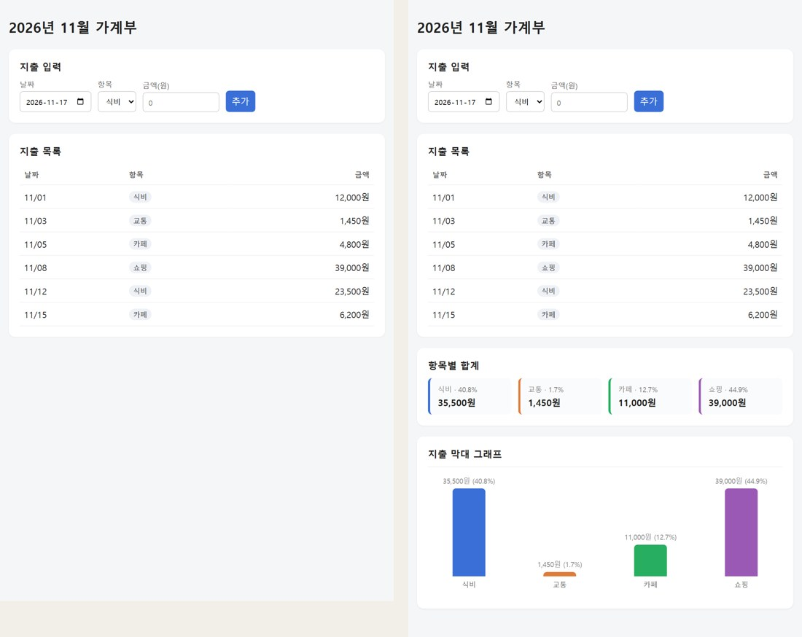
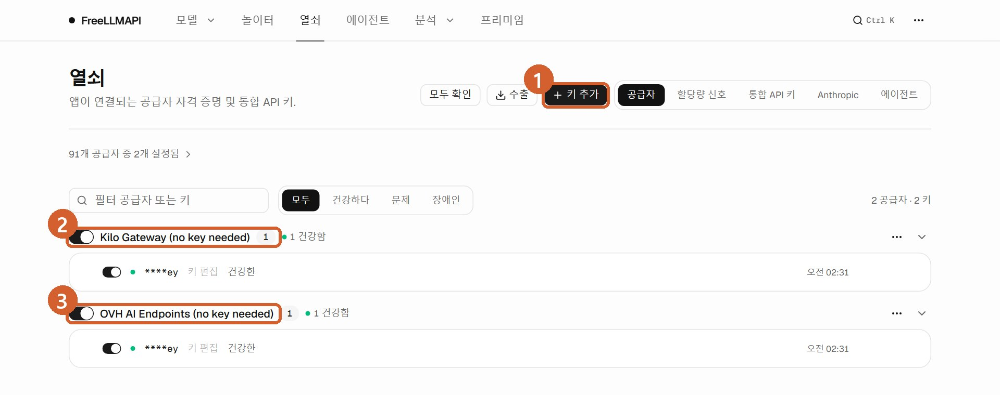
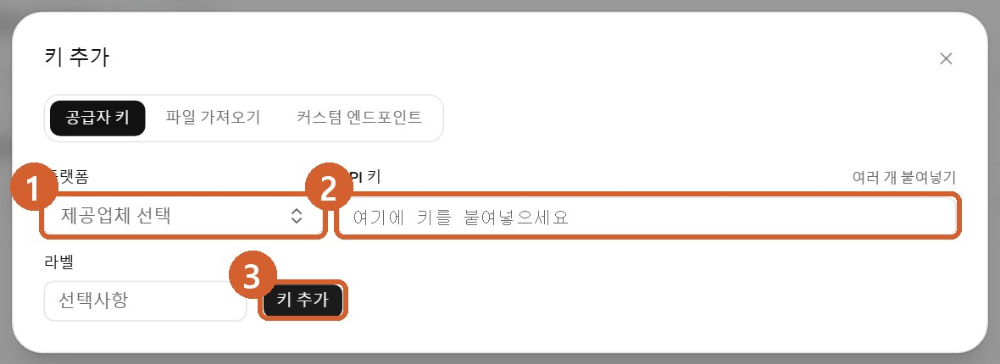
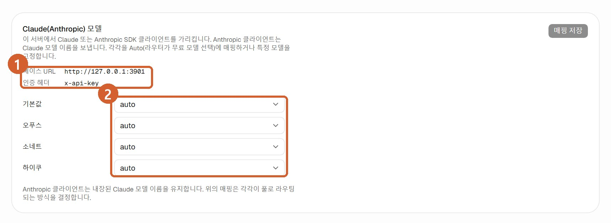
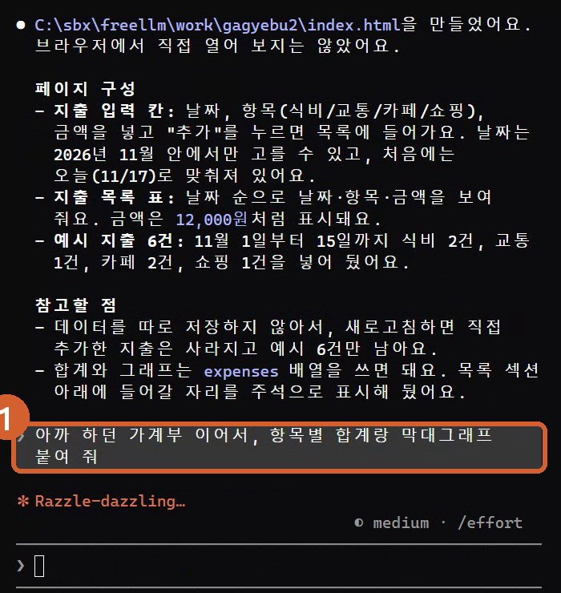
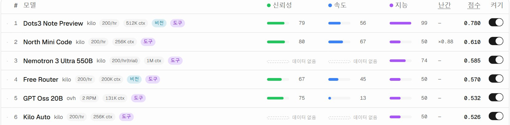

Claude Code 한도가 걸렸을 때, 여러 AI 회사가 무료로 열어 둔 한도를 한 주소로 묶어 둔 FreeLLMAPI로 Claude Code를 다시 열면 하던 대화를 그대로 이어서 일할 수 있어요. 무료 모델 하나가 막히면 다음 무료 모델로 알아서 넘어가요. 내 컴퓨터에서 돌아가는 오픈소스(MIT)예요.

윈도: Microsoft Store에서 'FreeLLMAPI'를 받아요(서명된 앱이라 막히지 않아요). 맥: github.com/tashfeenahmed/freellmapi/releases 의 .dmg. 앱을 켜면 트레이 아이콘 → 'Open Dashboard'로 관리 화면(http://127.0.0.1:31415)이 열려요. 앱은 따로 로그인할 필요가 없어요.
위 메뉴 '열쇠'에서 '키 추가'(1)를 눌러요. 'no key needed'라고 적힌 Kilo Gateway·OVH AI Endpoints는 키 없이 바로 붙어요(2·3, 켜짐 스위치). 더 좋은 모델을 쓰려면 Google AI Studio·Groq·OpenRouter 같은 곳에서 무료 키를 받아 같은 창에 넣어요.


'열쇠' → 'Anthropic' 탭에 Claude Code가 쓸 주소(1)가 있어요. 오푸스·소네트·하이쿠는 기본이 auto(2) — 그때그때 살아 있는 무료 모델로 보내요. '통합 API 키' 탭에서 키를 복사한 다음, 한도가 걸린 그 폴더의 PowerShell에서 아래 '복사해서 쓰기'의 세 줄을 넣어요. --continue는 가장 최근 대화를 이어서 열고, --resume은 목록에서 골라요.

다시 열린 Claude Code에 지난 대화가 그대로 보여요. 이어서 시키면 돼요(1). 아래 화면은 클로드가 가계부 입력 칸·목록까지 만든 대화를 무료 모델로 다시 열어 '이어서 합계랑 막대그래프 붙여 줘'라고 한 실제 화면이에요.

'모델' 화면의 순서대로 보내요. 1번이 막히면(한도·오류) 2번, 3번… 으로 넘어가고, 어느 모델이 답했는지는 '분석'에서 볼 수 있어요. 순서는 끌어서 바꿀 수 있어요. 이 편 시연에서도 첫 모델이 오류를 내자 다음 무료 모델로 넘어가 끝까지 해냈어요.

모델이 바뀔 때 새 모델에게 '하던 일 이어서 하라'는 짧은 메모를 붙여 주는 기능이에요. 기본은 꺼져 있어요. Docker·소스로 띄웠다면 .env 파일에 FREELLMAPI_CONTEXT_HANDOFF=on_model_switch 한 줄을 넣고 다시 켜요. 윈도 앱은 PowerShell에서 setx FREELLMAPI_CONTEXT_HANDOFF on_model_switch 를 실행하고 앱을 다시 켜요(앱이 같은 값을 읽어요 — 소스 코드 기준).
한도가 걸린 그 폴더에서 — 키 자리에 '통합 API 키'
$env:ANTHROPIC_BASE_URL = "http://127.0.0.1:31415" $env:ANTHROPIC_AUTH_TOKEN = "<통합 API 키>" claude --continue
Node.js가 깔려 있을 때 — 열린 뒤 /resume 으로 지난 대화 고르기
npx freellmapi launch --url http://127.0.0.1:31415 --api-key <통합 API 키>
Docker·소스로 띄웠을 때
FREELLMAPI_CONTEXT_HANDOFF=on_model_switch
설치 파일·문서
https://github.com/tashfeenahmed/freellmapi
도움이 되셨다면
@ai.antenna.kr
에서 바로 쓰는 AI 활용법을 계속 올립니다.